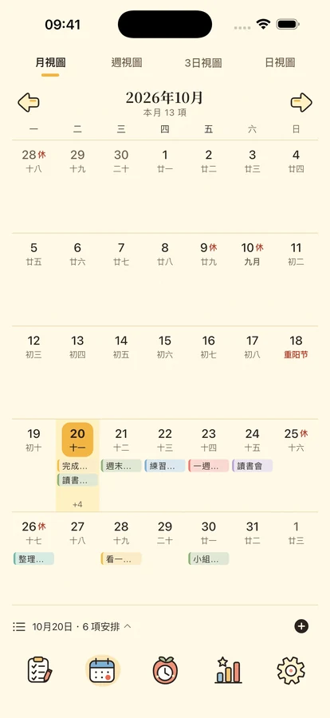
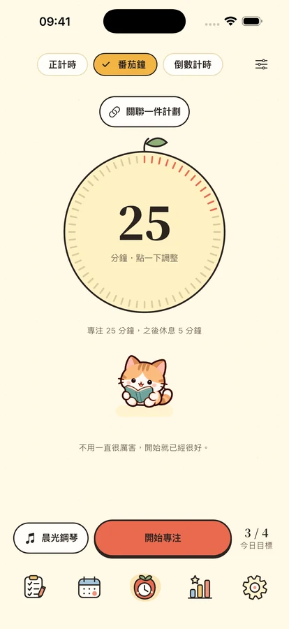
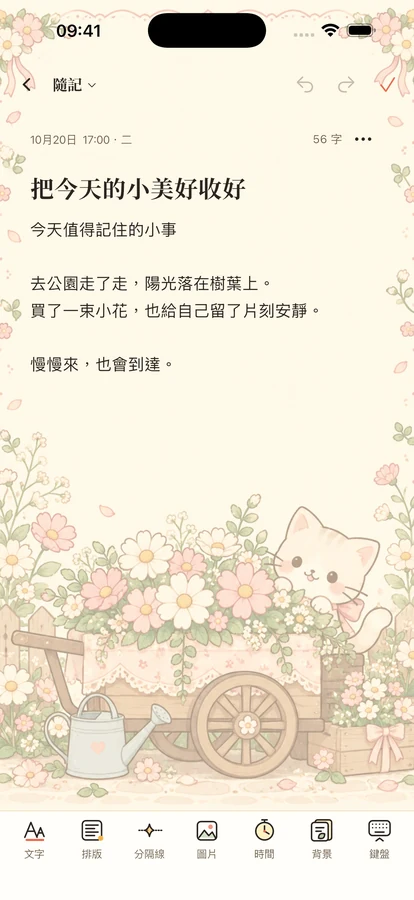

今天，也一起慢慢來。
從一件小事開始
安排事情，留出時間，也給自己一點陪伴。

把事情，放到合適的位置。
四象限分清重要與緊急；時間軸與日曆連起今天、這一週和接下來的安排。支援重複計畫、子計畫與本機提醒。
重要且緊急重要不緊急緊急不重要不重要不緊急
這段時間，只做眼前的事。
番茄鐘、倒計時與正計時，配上 8 首離線純音樂及 11 種環境聲。四位夥伴陪你專注和休息，也能切換翻頁時鐘。完整聲音庫需會員或三天體驗；一首純音樂、一種環境聲和靜音免費。 Plus: 時鐘進階外觀 · 小工具進階外觀 · 進階統計 · 計畫範本庫 · 自動雲端備份 · 備份版本紀錄.



把值得記住的日子收好。
用富文字備忘錄保存想法、照片和信箋，依日期與分類回顧；用倒數日期待生日與紀念日。iOS 17 以上支援計畫、日曆、專注、倒數日與備忘錄小工具。
你的日常，由你保管。
本機功能不需登入。雲端備份由你主動上傳，使用分析預設關閉；你可以匯出內容、調整隱私選項或刪除帳號。
隱私政策